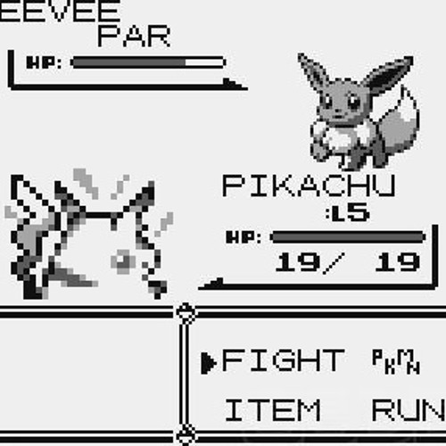
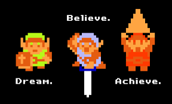
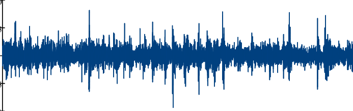
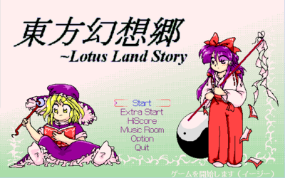

¿Cómo Empezar con LSDJ?
Es probable que te preguntes: "¿Como la gente trabaja con esto?", "Esto es horrible, ¿cómo alguien preferiría esto a los DAW?", "¿Por qué del 9 paso al A?" e incluso "¿Cuál es el sentido de la vida?" y si bien no tenemos respuestas para esto último, al menos podrías ilustrate un poco!
¿Pokémon Favorito?

¿Quien no adora tomar pequeñas criaturitas y criarlas para pelear?... Bueno eh.. seguramente te preguntes que tiene eso que ver con todo lo demás no?
Pues claro! Es necesario reconocer la importancia de los sonidos usados para estos juegos que se volvieron una sensación! Deben recordar que todo esto fue hecho en una pequeña máquina que apenas podía renderizar colores y sonidos... Así que por que no debatir sobre cual es el mas llamativo?
¿Que es la motivacion?

Esta es una pregunta dificil, y es demasiado extraño decirlo... pero ¿qué nos motiva a veces? ¿La fama? ¿El reconocimiento? ¿Vivir? Pues, realmente no es muy claro... pero supongo que siempre debemos estar felices de estar aqui. La múscia nos une, y tambien nos ayuda a expresar lo que no podemos decir, así que solamente he de agradecer a todos los que miran esto.
¿Que tiene que ver con los clásicos temas de las consolas antiguas? Pues todas aquellas canciones nos motivaron a tener fe y esperanza, por ende se han quedado grabadas en nuestra memoria, asi que deben recordar que aunque sencillo en composición, todo hecho con el corazón siempre será recompensado
La importancia del ruido blanco

El ruido es importante, a sus debidos niveles, en general esto resulta importante porque los seres humanos tenemos grandes inclinaciones a procesar los sonidos que llegan a nosotros
En el chiptune es lo mismo, aunque estando tan limitados por 4 canales por lo general, deja mucho a desear, no obstante intentaremos hacer lo posible para debatir sobre algunos tips o elementos que pueden ser importantes mantener o desechar en tus composiciones
¿¿¿ZUN un genio musical???

Desde la tierra del sol naciente yace un individuo bastante talentoso, que logró hacer las canciones mas icónicas para aquellos que han estado en internet lo suficiente!
Touhou, es una franquicia que ha estado vigente desde los 90, pero no estaremos aqui para explicar toda su historia, sino para resaltar la importancia de una de sus canciones mas conocidas

 Salve Klass!
Salve Klass!